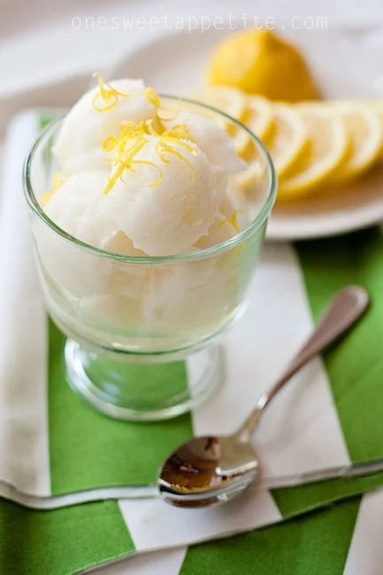

Return Home
Prep Time: 15 minutes
Freeze Time: 4 hours
Servings: 4-6
Ingredients
- 1 cup freshly squeezed lemon juice (about 4-6 lemons)
- 1 cup granulated sugar
- 1 cup water
- 1 tablespoon lemon zest
- Pinch of salt
Instructions
- Prepare simple syrup: In a saucepan, combine water and sugar. Heat over medium heat, stirring constantly until the sugar is fully dissolved. Remove from heat and let it cool.
- Mix ingredients: Once the syrup has cooled, add the freshly squeezed lemon juice, lemon zest, and a pinch of salt. Stir until well combined.
- Chill: Cover and refrigerate the mixture for at least 1 hour to ensure it's completely cold.
- Freeze: Pour the mixture into an ice cream maker and churn according to the manufacturer’s instructions until it reaches a smooth consistency. If you don’t have an ice cream maker, pour the mixture into a shallow dish and freeze, stirring every 30 minutes until smooth.
- Serve: Once fully frozen, scoop the sorbet into bowls and serve immediately or store in an airtight container for later.
Tips for the Perfect Sorbet
- For extra smoothness, strain the lemon juice to remove pulp and seeds.
- Want more tang? Add extra lemon zest to intensify the flavor.
- Pair with fresh mint or berries for an elegant presentation.
